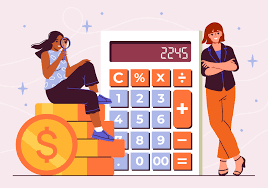

¿Como influye el conocimiento económico en las decisiones que toman los adolescentes y en su calidad de vida futura? Este llega a influir dentro de las decisiones de los adolescentes de forma positiva, porque les enseña a manejar correctamente sus gastos, al conocer y saber más de la economía y como esta es demasiado importante para todos, las decisiones que tomen los adolescentes pueden definir cómo será su organización del dinero (ingresos) en el futuro. Una parte clave de la calidad de vida que nos depara es justamente saber gastar bien tus ingresos, si no tienes algún conocimiento de ello y solo se gasta, sin pensar en un presupuesto o saber invertir, es muy probable que entres en deudas y sientas que no te alcanza el dinero, algo que, con un presupuesto y un buen manejo del dinero no pasaría, ya que pondrías primero tus necesidades primarias antes que los gastos hormiga o cosas que realmente no ocupas en ese momento. Saber esto puede ser útil para que en el futuro tu calidad de vida sea más tranquila.
